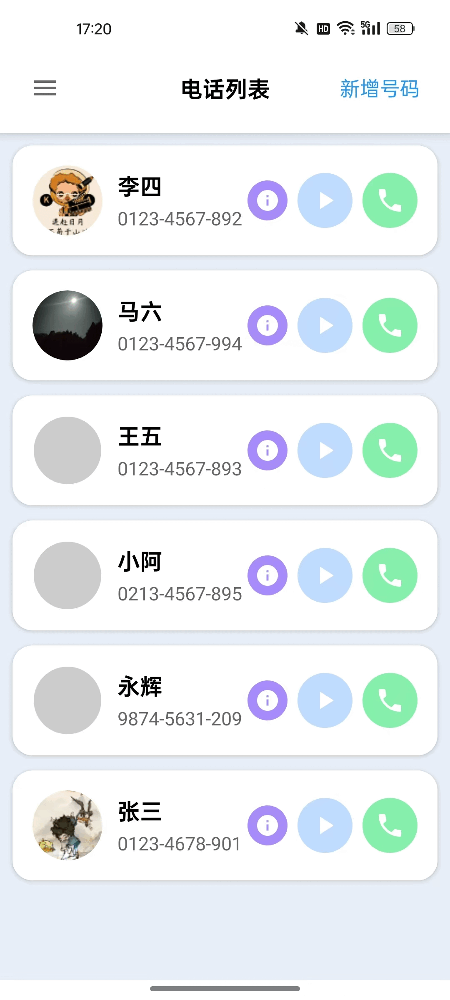

简易电话 - 专为老人设计的拨号应用
让不识字的老人也能轻松打电话
专为不识字老人设计的拨号应用，听录音、看照片就知道给谁打电话！
为什么选择简易电话？
许多老人不识字，面对智能手机通讯录里密密麻麻的文字无从下手。简易电话用最直观的方式解决这个问题——看照片、听声音，让打电话变得简单。
核心功能
- 📷 照片识别联系人
为每个联系人设置照片，老人看图就知道是谁

技术特性
- 支持 Android 5.0 及以上版本
- 轻量安装包，不占用过多空间
- 无需联网，保护隐私
- 使用 Claude Code 开发，快速迭代
下载安装
Android 版本
点击下载 APK (v0.1.0, 3.8MB)
iOS 版本
开发中，敬请期待
使用说明
- 安装应用后，添加常用联系人
- 为每个联系人拍照或选择照片
- 录制语音标签（如”大儿子”、”老伴”）
- 完成设置，老人即可通过照片和语音识别联系人并拨号
反馈与支持
如果您在使用过程中遇到问题，或有改进建议，欢迎通过以下方式联系我们：
简易电话 - 专为老人设计的拨号应用
https://blog.youshanhai.com/2025/12/27/2025/easycall/